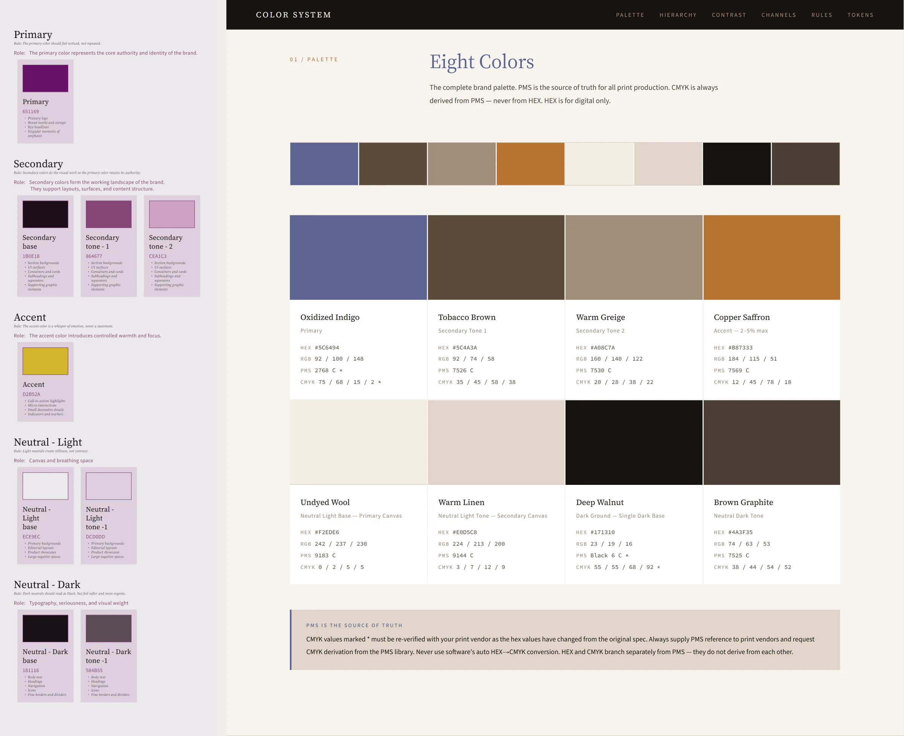

The idea
Drawn from the mark.
Nothing here is borrowed from a template. Every rule comes from something you already made: the SKS mark, your CV, your brand brief, and the line your career has drawn from garments to products.
01 — The mark
Five things the SKS mark already does
Each one becomes a rule for the whole system.
Source: LOGO.svg, eight hand-corrected sizesSo every arrow points ↗, and the career thread rises in 45° steps.
Anything you can press — buttons, tags, switches — ends like its strokes.
The grid, images and Inter stay hard. Lines, buttons and Baskerville stay soft.
One stroke token draws every line on the site: rules, underlines, arrows, the thread.
Small drawings have heavier strokes and open gaps. Type does the same: tight at display, loose at label size.
All three enlarged to the same height: the smaller drawings carry heavier strokes and wider gaps.
02 — Colour
Blue is the ink, not an accent
Your CV already sets your name and headings in blue. The system keeps that: SKS blue writes the name, the headings and every stroke. Text is a blue-black, like indigo-dyed cotton, so even the body copy belongs to the mark.
Sources: LOGO.svg · CV · brief (“neutrals + 1–2 bold tones”)#2C57CAThe mark, the name, headings, links, the stroke. 5.8:1 on cotton.
#163A9ALabels and pressed states, like the CV's bold caps.
#111A33Body text. A blue-black, never neutral black.
#4A5068Captions and secondary text. 7.2:1.
#F6F4EEUnbleached cotton — or white, see the switch.
#ECE8DFBehind images. Greige is the textile word for undyed cloth.
#E7EDFBSelection and hover tint.
noneOptional, and only for one job: what is happening now.
03 — Type
The pairing you already chose
Libre Baskerville and Inter are on your CV, your brand brief and your first design system. They stay. What changes is how they are used: Baskerville in blue for the voice, Inter for structure, and the CV's bold caps for labels instead of a monospace.
Source: CV · brief (“clean sans core, serif accent”)04 — Stroke & shape
One line, drawn the same everywhere
The seam between sections is a running stitch: short strokes with round ends. You trained in fashion and spent years on garments, home textiles and rugs, so the most personal line on the site is the one a needle makes. If it feels like too much, the switch turns it into a plain stroke.
1px, ink at 16%. Tables and lists.
2px SKS blue, round caps. Underlines, quote marks, the top of a decision.
Stitch or line — your call.
Images and the grid stay square.
05 — In use
Two ways to open the site
Same system, two heroes. Option A leads with the mark. Option B leads with your path, drawn as one continuous thread. Copy is placeholder until you write it.
Shashank Kumar Sinha
Trained in fashion at NIFT. Ten years from garments and home textiles to identities, interfaces and the systems that keep them consistent.
Now — Brand & Product Design Lead, Vistofy
Shashank Kumar Sinha
Brand and product designer. Trained in fashion at NIFT; ten years from garments to identities, interfaces and design systems.
- 2016Pearl GlobalAssistant designer, Ann Taylor
- 2017Studio NovatureAssistant designer
- 2018Digambar KaminiFounder, home textiles
- 2021Tech Pro LabUI designer
- 2022Learnet SkillsConsultant, UX research
- 2023IndependentBrand & web
- 2026VistofyBrand & product design lead

Indi Teppich
A brand that steps back so the rug can lead: positioning, two marks, an eight-colour palette and a 191-variable system.
Read the case study
COPO
An identity drawn from the Kopou orchid, with a logo manual and every printed piece rendered in Cinema 4D.
Read the case studyA palette that steps back
The first palette was plum and gold. The final system is eight earth colours drawn from natural-dye heritage, each with its print and screen values and a fixed share of the page.
Cover your product photography. If the palette feels generic without it, it's working too hard.

January's plum and gold, beside the final eight colours.
06 — Left behind
What made v2 look generated
These are the moves AI site builders reach for by default. None of them had a reason rooted in you.
Instrument Serif + Inter + a monospace→ your own Baskerville + InterA poster-size name with an orange full stop→ the name at a reading size, in your blueMonospace uppercase labels everywhere→ the CV's bold caps“(05)” counters and “Fig. 01” captions→ plain numbers where they helpVisible grid lines as decoration→ a grid you feel, not seeA black “Let's work together.” slab→ contact in the same voice as the restOrange from nowhere→ the blue of your markAphorism cards and a three-column skills list→ content decided later, with you
07 — Your calls
Four decisions before anything is built
Second colour
Blue only, magenta (your CV's contact colour) or orange (your brief). Used for one job only: what is happening now.
The seam
A running stitch for your textile years, or a plain stroke.
Paper
Unbleached cotton or white. Your CV and invoice are white.
The hero
A — the mark, or B — the thread. Or the thread on About and the mark on Home.